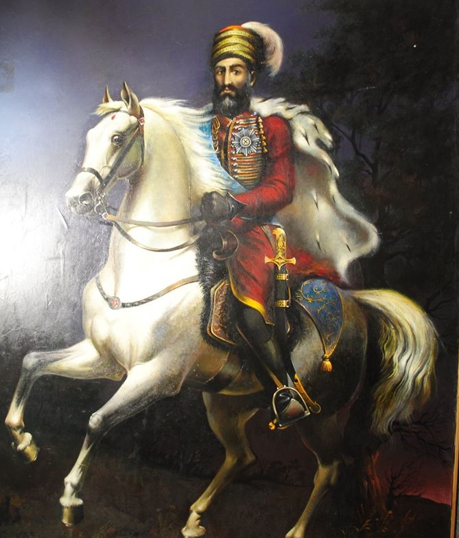
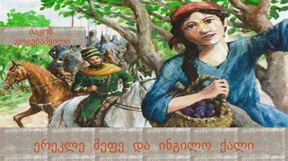

ერეკლე II - პატარა კახი (1720–98), 1744 წლიდან კახეთის, 1762 წლიდან ქართლ-კახეთის მეფე, თეიმურაზ II -ის ძე, ბაგრატიონთა კახეთის შტოდან. სახელმწიფო მოღვაწე და მხედართმთავარი. კახეთის ტახტზე ავიდა როგორც ირანის ვასალი, მაგრამ ნადირ-შაჰის მკვლელობის შემდეგ ერეკლე II და მისი მამა – ქართლის მეფე თეიმურაზ II, ფაქტობრივად, დამოუკიდებელი მმართველები გახდნენ. ამის შემდეგ ამიერკავკასიაში დაწყებულ ხანგრძლივ ომებში ქართული ჯარი ერეკლე II-ის სარდლობით მეტწილად გამარჯვებული გამოდიოდა.თეიმურაზ II -ის გარდაცვალების შემდეგ (1762) ერეკლე II-ის ხელში ქართლისა და კახეთის სამეფოები გაერთიანდა, რაც საქართველოს გაერთიანებისაკენ გადადგმული დიდი ნაბიჯი იყო. გარდა ამისა, ქართლ-კახეთის სამეფოს პოლიტიკური გავლენა ვრცელდებოდა ერევნისა და განჯის სახანოებზე, რომელთა მმართველები აღმოსავლეთ საქართველოს მეფის ვასალები და მოხარკეები იყვნენ. საგარეო პოლიტიკაში ერეკლე II-მ საბოლოო არჩევანი რუსეთთან კავშირზე შეაჩერა, რომელთანაც გეორგიევსკის ტრაქტატი გააფორმა. მისი საშინაო პოლიტიკა მიმართული იყო ქვეყნის საწარმოო ძალების განვითარებისკენ, პოლიტიკური ცენტრალიზაციისა და თავდაცვისუნარიანობის გაზრდისაკენ. ცდილობდა ქვეყანაში ევროპული ყაიდის რეფორმების გატარებას. ამ მხრივ მეფის ერთ-ერთი უმნიშვნელოვანესი ღონისძიება იყო მორიგე ჯარის შექმნა, რომელიც თავისი მაქსიმალური აღმავლობის ხანაში (1770-იან წლებში.) ნახევრადრეგულარულ ფორმირებას წარმოადგენდა. ერეკლე II-ის პერიოდი ქართული ფეოდალური სამხედრო ხელოვნების განვითარების უმაღლესი საფეხურია. როგორც ტაქტიკოსს, მეფეს ახასიათებდა ინიციატივის ხელში ჩაგდების მიზნით სწრაფი მარშების მოწყობა და მტრისთვის მოულოდნელი დარტყმების მიყენება. მისი მხედართმთავრული ოსტატობა გამოიკვეთა აგრეთვე ჯარების სახეობათა როლის სწორ შეფასებასა და ბრძოლის დროს მათი ურთიერთქმედების ორგანიზებაში. მეომრების საბრძოლო სულის ამაღლების მიზნით მეფე, როგორც წესი, პირადად მიუძღოდა ჯარს ბრძოლაში და მონაწილეობდა შეტაკებებში. საქართველოს აღორძინების ერეკლესეული გეგმა არ განხორციელდა ქვეყნის ეკონომიკური სისუსტის, უცხოელთა შემოსევებისა და რუსეთის მიერ ნაკისრი ვალდებულებების შეუსრულებლობის გამო.
ერეკლე მეფეს ომი ჰქონდა ჭარის ლეკებთან და ძლიერ დაამარცხა. გამარჯვების შემდეგ თავისი ჯარით უკან გამობრუნდა მეფე, ორმოცდაათი წლის ვაჟკაცი, მშვენიერს ბედაურზე იჯდა და წინ მოუძღოდა ჯარსა. ჯარი, გრძლად და ლამაზად დამწკრივებული, ფეხდაფეხ მისდევდა მეფესა. გზა საინგილოზე მიდიოდა. ერეკლე შემოვიდა ერთს განიერს ორღობეში, რომლის აქეთ-იქით ჩამწკრივებული იყო დიდრონი ვენახები და ბაღები, სავსე დამკრახული და დაბრაწული ხილითა. უცებ მეფეს თავზე ვიღაცამ გადმოაყარა მთელი ბღუჯა ქლიავი. გაოცებულმა მეფემ თავისი ბედაური შეაყენა. გაჩერდა ჯარიცა. მიიხედ-მოიხედეს და იქვე ვენახის ღობესთან დაინახეს ვეებერთელა ქლიავის ხეზე თორმეტიოდე წლის ინგილო გოგონა, რომელსაც ქლიავი ესროლა მეფისთვის. მხლებელნი მეფისა წამსვე ჩამოიჭრნენ ცხენებიდან, აცვივდნენ ღობეზე და შეჰყვირეს პატარა ქალსა: „შე ბრიყვო, შე საძაგელო, ეს რა ჰქენი? მეფე ერეკლეს თავზე ქლიავის გადმოყრა როგორ გაბედე? ჩამო ეხლავ ხიდან და ბოდიში მოითხოვე მეფის წინაშე, თორემ შავი დღე დაგადგება“. - რაო? მეფე ერეკლეო? - განცვიფრებით ჩამოსძახა ზევიდან გოგონამ. - რას ამბობთ? ეგ რომ ჩვენი სახელოვანი მეფე ერეკლე იყოს, განა სპარსულს ქუდს თავზე დაიხურავდა? არა, ეგ ტყუილია. მე ქლიავი თავზე გადმოვაყარე სპარსელს, ჩვენს მოსისხლე მტერსა და არა მეფე ერეკლეს, რომელიც ყველა ქართველს ღმერთივით გვიყვარს და თქვენ სულ ტყუილად მემუქრებით. არც ძირს ჩამოვალ და არც ბოდიშს მოვიხდი. და უფრო მაღლა წავიდა ხეზე. ეს პასუხი გაიგონა მეფე ერეკლემ, გულიანად გადაიხარხარა, მოიხადა სპარსული ქუდი, რომლის ტარებას დაეჩვია ყმაწვილობაში, სპარსეთში ყოფნის დროსა, დაანახვა თავისი მშვენივრად მოყვანილი ქართული თავი და შესძახა პატარა ქალსა: „ყოჩაღ, ქალო! სრულიად მართალი ხარ. სპარსული ქუდი სწორედ რომ არ უნდა მეხუროს მე. ქართველი მეფე გარეგნობითაც, ტანისამოსითაც ქართველი უნდა იყოს. კარგი, ჩინებული დარიგება მომეცი შენ მაგ ქლიავის სროლითა. ბარაქალა შენს ქართველ ქალობასა!“ ამასთან ერეკლემ იკრა ჯიბეზე ხელი, ამოიღო მთელი ბღუჯა თეთრი ფული, მისცა თავის მხლებლებს და უბრძანა: „საჩუქრად მიეცით ეს მაგ სამაგალოთო ქართველ გოგოცუნასო“. გოგო ახლა კი მიხვდა თავის შეცდომას და შეწუხდა ძლიერ, საჩუქარი შორს დაიჭირა, ცივს უარზე დადგა, მაგრამ მხლებელმა უთხრა მოსარბილებლად: „განა მეორედაც გინდა აწყენინო მეფესა? მეფის წყალობაზე უარის თქმა ვის გაუგონია? თუ გსურს, შენი შეცდომა გაასწორო და ერეკლე მეფეს აამო, ეს ფული მიიღე საჩუქრადა“. მაშინ კი გოგო დაეთანხმა, ზევიდან ქვემო ტოტზე ჩამოვიდა, მოსწვდა ძირსა, გამოართვა ფული და ჯიბეში ჩაიჩხრიალა; მერმე შურდულივით ავარდა ქლიავის კენწეროზე, კარგად გამოჩნდა, გასწორდა ტოტზე, მეფეს დაბლა დაუკრა თავი და წკრიალა ხმით გადმოსძახა: „მეფე ერეკლეს გაუმარჯოს!“ „ ქართველ ქალსაც გაუმარჯოს!“ - შესძახა მამობრივი ხმით მეფე ერეკლემ, დასძრა თავისი ბედაური და ჯერ კიდევ თავმოხდილი გაუძღვა ჯარსა. ჯარი, ამაყი თავისი მამაცი მეფით და თავისი ვაჟკაცობით, უკან მისდევდა მწყობრად და თანაც აგუგუნებდა მშვენიერს ქართულს სიმღერასა. ქართველი ქალი კი იდგა ამართული ქლიავის კენწეროზე, თვალს არ აშორებდა მიმავალს მეფესა და მის ჯარსა და, შეწყდებოდა თუ არა სიმღერა, ჰაერში გაისმოდა მისი ზარივით ხმა: „მეფე ერეკლეს გაუმარჯოს!“ „ქართველ ჯარს გაუმარჯოს!“ ამ სახით იდგა ქართველი ქალი დიდხანს და გრძნობდა იმისთანა სიხარულს, იმისთანა ნეტარებას, რომელიც წინათ სიზმრადაც არ მოსჩვენებია. ქალს უზომოდ ახარებდა ნახვა სანატრელის მეფისა, მასთან საუბარი, მისი მამობრივი ქება, მისი მეფური საჩუქარი. ქალი, სიხარულით დამთვრალი, ჩამოვიდა ხიდან მხოლოდ მაშინ, როდესაც შორეულმა ნისლმა დაჰფარა მეფეცა და მისი ჯარიცა. მაგრამ ამ ადგილიდან ქალს წასვლა აღარ უნდოდა. ის სიყვარულით შესცქეროდა ხან იმ ადგილს, სადაც მეფე ერეკლე ედგა და ელაპარაკებოდა და ხან ქლიავის ხესა, რომელთანაც იმ დღიდან შეერთდა, შეხორცდა მის გონებაში ბედნიერი წამი, უტკბილესი შემთხვევა. ერთი საათის წინათ უბრალო ხეხილი ახლა ამ პატარა ქალის თვალში გადაიქცა გულითად მეგბრად, ძვირფას მოკეთედ, თითქმის კეთილ სულიერად გადაიქცა სამუდამოდ, საუკუნოდ. ბოლოს გოგოცუნა გამოფხიზლდა ჭარბი სიხარულისგან, მოაგონდა თავისი დედ-მამა და მოჰკურცხლა შინისაკენ, რათა ეხარებინა მათთვის თავისი საარაკო ბედნიერება.
